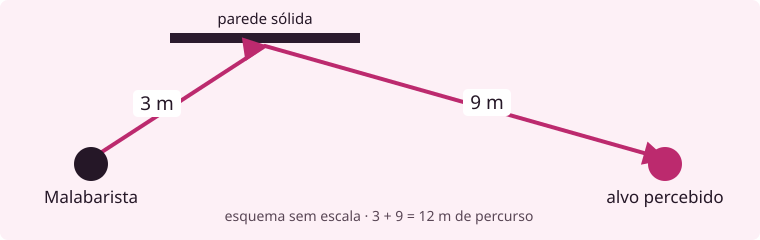

Em seu turno, você dispõe de Ação de Movimento, Ação Padrão, Ação Bônus e Reação. Elas são recursos separados. A Reação é usada quando acontece o gatilho descrito por uma regra e se recupera no começo do seu turno.
Ação de Movimento é o recurso que você gasta. Deslocamento é a distância que ele permite percorrer. O deslocamento básico é 9 m; sua ficha pode aumentar ou reduzir esse valor.
Você pode dividir o movimento antes e depois das outras ações. Por exemplo: andar 3 m, atacar e andar os 6 m restantes. Mudar a ordem não aumenta a distância disponível.
Essa sequência respeita as demais regras: sair do alcance corpo a corpo de um inimigo pode provocar um ataque de oportunidade. Ter movimento sobrando não impede essa resposta.
Correr usa sua Ação Padrão e acrescenta movimento igual ao seu deslocamento, até o fim do turno. Quem tem deslocamento 9 m pode percorrer 9 + 9 = 18 m, usando Movimento e Correr.
Desengajar também usa a Ação Padrão. Seu movimento deixa de provocar ataques de oportunidade pelo restante do turno. Você conserva a distância que ainda podia percorrer; essa ação não concede metros adicionais.
Uma habilidade pode mudar o custo: no nível 2, o Incursor pode Desengajar como Ação Bônus. A exceção pertence ao Caminho; a regra comum continua sendo a descrita acima.
Você pode converter Padrão em Bônus e Bônus em Movimento. A conversão só segue essa direção. Uma Padrão convertida já foi gasta: ela não continua disponível para atacar ou conjurar.
A Bônus só executa o que estiver autorizado como Bônus, inclusive nas ações comuns. Todos podem usar Provocar ou Ler o Ambiente quando atenderem aos requisitos dessas ações; as habilidades da ficha acrescentam outras opções.
Incursor · Trilha Malabarista · nível 2
O Malabarista alterna golpes de perto e arremessos. Pode investir PE para atacar duas vezes na Ação Atacar e usar Fluidez para mudar o trajeto de uma arma. As duas despesas são registradas separadamente.
Use Força ou Destreza no acerto e no dano de ataques corpo a corpo e de arremesso com armas de uma mão. Escolha a cada ataque e cumpra os demais requisitos da arma.
Durante seu turno, você tem duas manipulações gratuitas de itens, em vez de uma. A segunda serve para sacar, guardar ou recolher uma arma solta ao alcance, com uma mão disponível. Não permite recarregar nem tomar uma arma empunhada. As próximas manipulações seguem seus custos normais.
3 PE · uma vez por turno seu · ao usar a Ação Atacar
Pague antes do primeiro ataque. Faça dois ataques com armas de uma mão no lugar do ataque único normalmente disponível. Outra regra de ataques adicionais não se soma a esta: use a maior quantidade.
Você pode combinar golpes corpo a corpo e arremessos, usar a mesma arma ou armas diferentes e escolher um ou mais alvos. Resolva cada ataque separadamente, mesmo que o anterior erre. Sua Ação Bônus permanece disponível. Canalizar em Golpe e Estímulo conservam suas próprias regras.
No nível 2, o Incursor ganha Fluidez ao acertar uma criatura hostil com arma ou ataque desarmado durante seu turno, ou quando uma criatura hostil erra um ataque contra ele. Pode obtê-la uma vez entre o começo de um turno seu e o começo do próximo. Guarda apenas uma por vez.
Se já tiver Fluidez, outro gatilho não acumula nem reserva uma segunda; também não consome sua obtenção disponível. Depois de gastar Fluidez, você precisa de um novo gatilho para recuperá-la, respeitando o limite. Sofrer dano não a remove. Ela termina ao ser gasta, quando você fica Incapacitado ou quando o combate acaba.
Fluidez · durante seu turno · antes da rolagem de arremesso
Ao arremessar uma arma de uma mão, gaste Fluidez para atingir uma superfície sólida antes do alvo. Escolha um alvo que você percebe e o ponto de ricochete. Os dois trechos precisam permitir a passagem da arma.
O ponto deve estar dentro do alcance original da arma. Depois dele, você recebe 6 m adicionais de alcance, somados à distância que ainda restava. Isso aumenta em 6 m tanto a faixa normal quanto a longa, uma única vez nesse ataque.

| Confira os trechos | Consequência por distância |
|---|---|
| Da mão até a superfície | Até a faixa longa original. Se passar da faixa normal original, o ataque já tem desvantagem. |
| Percurso completo, somando os dois trechos | Até a faixa longa + 6 m. Se passar da faixa normal + 6 m, o ataque tem desvantagem. |
No exemplo, o chakram tem faixas 6/18 m. A parede está a 3 m e o alvo a mais 9 m dela: 3 + 9 = 12 m. O ataque cabe na faixa normal ampliada de 12 m, sem desvantagem por distância. Outras causas de desvantagem ainda podem se aplicar.
Se a parede estivesse a 9 m da mão, o primeiro trecho já ultrapassaria os 6 m normais. O ataque teria desvantagem, mesmo que o alvo estivesse logo depois da parede.
Confira a cobertura pela direção que vem da superfície. Você pode contornar uma cobertura quando houver esse trajeto, inclusive com a linha direta bloqueada. A habilidade não revela alguém que você não percebe e não atravessa um percurso obstruído.
Resolva um único ataque contra a criatura. A superfície não recebe outro ataque. Ricochete modifica um ataque que você já podia fazer e não devolve a arma à mão. Acerto, dano, crítico e demais condições do ataque seguem suas regras normais. Um acerto pode gerar Fluidez se ainda houver uma obtenção disponível.
Fluidez + 3 PE · uma vez por turno seu
No seu turno, depois de resolver um arremesso com arma de uma mão que acertou uma criatura hostil, faça a mesma arma seguir para outra criatura hostil percebida a até 6 m da primeira. Pague os custos antes da nova rolagem.
É um ataque adicional imediato, sem gastar outra ação ou um ataque disponível. Use dano, crítico e demais requisitos normais da arma, inclusive Canalizar em Golpe ou Estímulo quando aplicáveis. Confira distância e cobertura desde a primeira criatura. O trajeto precisa estar livre, e os 6 m não recebem outro acréscimo de Ricochete. As condições da sua posição continuam valendo, inclusive arremessar colado a um inimigo.
A arma faz a continuação sem ser recuperada, mas não volta à sua mão. Você pode usar a Fluidez obtida no primeiro acerto, se pôde ganhá-la. Esse acerto não a gera de novo depois do gasto. O novo ataque segue os próprios gatilhos e o limite do Caminho.
Fluidez · uma vez por turno seu
No seu turno, depois de errar um arremesso de arma de uma mão contra uma criatura hostil, gaste Fluidez para tentar atingir outra criatura hostil percebida a até 6 m do alvo original. Faça uma nova rolagem. O erro não fornece a Fluidez necessária.
O novo alvo também precisa estar ao alcance da arma, medido da origem desse ataque, com trajeto válido.
Se usou Ricochete: conserve a superfície e o acréscimo e confira o novo percurso. Se corrige Lançamento Cruzado: meça desde a primeira vítima e mantenha o limite de 6 m; a nova vítima deve ser diferente dela.
A correção integra o mesmo ataque, não gasta outro ataque disponível e não tenta novamente contra o alvo original. Se errar de novo, não há outra correção. O erro inicial permanece; use a nova rolagem para acerto e crítico, com dano normal. Reavalie vantagem, desvantagem e cobertura. Efeitos declarados antes do dado ainda exigem seus requisitos; efeitos ligados ao resultado do primeiro d20 não passam para o segundo.
Um acerto da correção pode gerar Fluidez dentro do limite. Se corrigiu um ataque comum, ainda pode usar Lançamento Cruzado disponível, pagando seus custos. Corrigir o próprio Cruzado não devolve seu uso. Nos níveis seguintes, Cruzado, Trajetória de Retorno e Finta de Retorno compartilham a mesma utilização por turno.
Situação preparada. Haru é Incursora Malabarista de nível 2. Começa o turno com 12 PE, sem Fluidez e com a obtenção do ciclo disponível. Tem um chakram de uma mão em cada mão. As faixas de arremesso usadas aqui são 6/18 m. Ela percebe dois inimigos: A está a 6 m dela; B está a 4,5 m de A. Os trajetos estão livres, e nenhum inimigo está em alcance corpo a corpo de Haru.
Esta sequência acompanha ataques, armas e recursos. Considere os três ataques acertados, já resolvidos contra as defesas dos alvos. O dano e suas parcelas não são detalhados neste recorte; cada ataque conserva suas regras normais.
| Etapa | O que acontece | Saldo de recursos |
|---|---|---|
| 1. Pagar a Ofensiva | Haru usa a Ação Atacar e paga 3 PE antes do primeiro ataque. Terá dois ataques nessa ação. | 12 − 3 = 9 PE; dois ataques disponíveis. |
| 2. Primeiro arremesso | A arma da mão direita acerta A. Haru ganha Fluidez; consumiu a única obtenção permitida neste ciclo. | Um ataque da ação ainda disponível; mão direita vazia. |
| 3. Continuar para B | Haru gasta a Fluidez e 3 PE no Lançamento Cruzado. A mesma arma ataca B, a 4,5 m de A. | 9 − 3 = 6 PE; continuação usada; sem Fluidez. |
| 4. Segundo arremesso | Haru arremessa a arma da mão esquerda contra A, ainda a 6 m. Usa o segundo ataque da Ação Atacar. | Nenhum ataque da ação sobrando; ambas as mãos vazias. |
Os acertos do Cruzado e do segundo arremesso não dão outra Fluidez no nível 2: a obtenção deste ciclo já foi usada. Nenhuma arma voltou automaticamente. Haru precisará recuperá-las ou sacar outra para atacar de novo, respeitando alcance, mãos e manipulações disponíveis.
Ela precisaria ter Fluidez antes do primeiro arremesso. Como começou sem esse recurso, não pode declarar Ricochete e esperar que o acerto pague o custo depois. Primeiro se confere o requisito; depois se rola.
Peso nas Mãos é o feitiço usado por Kaori no primeiro combate. Ela quer tocar um inimigo, causar dano de Concussão e derrubá-lo. Sua Regra é: “Tudo que eu prendo entre as minhas mãos fica mais pesado.” Controle é uma de suas Famílias Livres: esse grupo de efeitos recebe desconto nas Melhorias, respeitando o custo mínimo de 1 ponto.
Classe define o orçamento e os limites do feitiço. Forma define como ele alcança o alvo. Melhorias compram efeitos; Restrições devolvem pontos para pagar Melhorias. O Selo é a exigência simples para conjurar: Kaori encosta as palmas uma na outra. Leve, Média e Pesada são categorias de preço da tabela Números da montagem, no Fundamento; a conta abaixo usa os valores da Classe 1.
| Escolha | Conta na montagem |
|---|---|
| Classe 1 | 3 pontos de orçamento. Conjurar custa 3 PE. Kaori tem acesso a essa Classe no nível 2. |
| Forma Toque | Um alvo a 1,5 m, com rolagem de acerto. A Forma não cobra pontos e traz Corpo a Corpo, uma Restrição de devolução Média. |
| Condição: Derrubado | Melhoria Leve de Controle: custa 1 ponto. Mesmo na Família Livre, o mínimo mantém esse custo em 1. Dura 1 rodada. |
| Devolução de Corpo a Corpo | Na Classe 1, Média devolve 1 ponto. Ele paga o ponto gasto na Melhoria. |
| Saldo para dano | 3 − 1 + 1 = 3 pontos. Cada ponto restante vira 1d8: 3d8. |
A montagem usa uma Melhoria e a Restrição embutida da Forma, dentro dos limites de duas de cada na Classe 1. A devolução aproveitada é 1, abaixo do limite de 2 dessa Classe. A Forma não ocupa uma vaga de Melhoria.
Ação Padrão · 3 PE · alvo a até 1,5 m. Kaori junta as palmas e toca o alvo com as duas mãos. Faz d20 + 4 contra a Defesa: Força 3, escolhida para a técnica, mais maestria 1. No acerto, causa 3d8 de Concussão e deixa o alvo Derrubado por 1 rodada. Paga o PE mesmo se errar.
A descrição informa como o feitiço aparece em cena. Os valores acima determinam seu efeito; tocar com as duas mãos não acrescenta dano de soco, Força ao dano ou Canalizar em Golpe.
A Restrição não aumenta o dano acima do orçamento
Sem a Melhoria Derrubado, não haveria esse ponto a pagar. O 1 devolvido por Corpo a Corpo seria perdido e o feitiço ainda causaria 3d8, não 4d8. A devolução só cobre pontos gastos em Melhorias.
Uma entidade é uma criatura vinculada ao personagem pelas regras de Invocações. Nesta amostra, Kaito tem um shikigami em forma de cão. A criatura já foi adquirida e montada; vamos acompanhar seu uso em campo.
Vocês agem na mesma iniciativa. Um ciclo vai do começo de um turno de Kaito ao começo do próximo. A virada da rodada global não renova recursos. No seu turno, no máximo duas entidades suas atuam causando dano, fora as especiais comandadas.
| Recurso | Quem o usa e para quê |
|---|---|
| Atuação básica | Cada entidade em campo renova uma no começo do turno do invocador. Permite a ação compatível com sua ficha e intenção. Conhecer duas básicas oferece escolhas, não duas atuações. |
| Movimento | Cada corpo usa a distância da própria ficha. Não recebe os metros de Kaito. |
| Reação coletiva | Todas as entidades de Kaito dividem uma reserva. Uma resposta que a gaste deixa as demais sem ela até renovar. |
| Padrão e Bônus | Pertencem a Kaito. Comandar uma especial usa sua Padrão; dar ou mudar uma tarefa usa sua Bônus. Ações que ele deixa de usar não passam às entidades. |
Intenção é a tarefa que ela continua cumprindo. “Proteja esta porta” permite ao cão escolher entre ameaças à passagem e agir conforme sua ficha. Isso não obriga um inimigo a atacá-lo, nem concede uma interceptação automática.
Uma Bônus permite dar novas tarefas a até todas as suas entidades em campo. A tarefa não renova os recursos e não comanda uma especial. Para a criatura usar uma especial, Kaito gasta sua Padrão; ela ocupa a básica ainda disponível e paga o custo de PE da habilidade.
Entrar, trocar e recolher usam a Bônus de Kaito, no turno dele e enquanto estiver consciente. Cada entrada cobra PE igual à Classe do nível da entidade; recolher não cobra PE. Fora do combate, entrar e recolher dispensam a ação, mas a entrada ainda cobra PE.
Uma entrada sem substituição põe a entidade em espaço livre a até 1,5 m de Kaito, com Movimento, mas sem básica nesse ciclo. Dar a primeira tarefa exige outra Bônus. Converter a Padrão em Bônus permite essa orientação, mas gasta a ação que comandaria uma especial.
Antes da iniciativa, Kaito manifestou seu cão de sombra de nível 2 e deu a tarefa “proteja esta porta”. A entrada custou 1 PE. Para este exemplo, ele tinha 7 PE disponíveis e ficou com 6; esses números são o saldo preparado da cena, não a reserva máxima do personagem.
No começo do turno de Kaito, o cão está em campo e renova sua básica. Uma maldição hostil tenta passar pela porta e está a 1,5 m dele. O cão percebe o alvo e recebe as ordens de Kaito. Nenhum dos dois precisa se mover neste recorte. Vamos comparar as ações e a energia gastas; o exercício não simula as rolagens nem o dano contra uma ficha inimiga completa.
| Cão de sombra, nível 2 | Dados usados na cena |
|---|---|
| Vida e Defesa | 12 de Vida; Defesa 13. |
| Mordida básica | Sem PE; acerto d20 + 4; alcance 1,5 m; dano 1d6. |
| Mordida especial, Classe 1 | 3 PE; acerto d20 + 6; alcance 1,5 m; dano 2d8. |
| Energia | Não tem reserva própria: o custo da especial sai todo de Kaito. |
O cão ataca a maldição que ameaça a passagem, cumprindo sua intenção. Gasta a básica e resolve a mordida: d20 + 4, contra a Defesa do alvo; se acertar, causa 1d6.
Kaito continua com 6 PE e conserva sua Ação Padrão para outro uso. Ele não precisou gastar uma Bônus para repetir a tarefa. Neste ciclo, o cão já gastou a básica e não pode usá-la de novo para executar a especial.
Kaito gasta sua Ação Padrão para comandar a mordida especial. Paga 3 PE: de 6, fica com 3. O cão usa sua básica ainda disponível para executar a habilidade: d20 + 6, contra a Defesa; se acertar, causa 2d8.
Depois do resultado, Kaito pode manter a intenção ou dar outra ao cão sem uma Bônus adicional. Isso não renova sua básica nem orienta as outras entidades. O cão não faz a mordida básica depois da especial neste ciclo.
Um teste de perícia é d20 + atributo; some também a maestria se houver treino. A tabela reúne as 23 perícias atuais. Cada uma tem um atributo fixo, salvo uma exceção expressa de habilidade, como a Força usada pelo Bastião em Provocar.
A coluna de uso ajuda a escolher a perícia. Ela não substitui os procedimentos de ações como Esconder ou Estudar, nem define distâncias de salto e escalada. As aplicações abaixo conservam o campo de atuação das perícias da edição vigente.
| Perícia | Atributo | Use para… |
|---|---|---|
| Atletismo | Força | Correr, escalar, nadar, saltar e carregar quem não consegue andar. |
| Acrobacia | Destreza | Manter o equilíbrio, lidar com uma queda ou passar por espaço apertado. |
| Furtividade | Destreza | Mover-se sem ser visto nem ouvido. |
| Pontaria | Destreza | Atingir algo pequeno, distante ou em movimento, fora de uma rolagem de ataque. |
| Prestidigitação | Destreza | Ocultar ou trocar um objeto e tirar algo de um bolso sem chamar atenção. |
| Investigação | Inteligência | Vasculhar um local, comparar pistas e deduzir o que aconteceu. |
| Intuição | Inteligência | Interpretar ações, inconsistências e motivações de uma pessoa. |
| Ocultismo | Inteligência | Reconhecer maldições, técnicas conhecidas, barreiras e o funcionamento da energia amaldiçoada. |
| Religião | Inteligência | Reconhecer práticas religiosas, templos, rituais e o significado de selos. |
| História | Inteligência | Consultar ou lembrar acontecimentos do mundo comum e dos registros das famílias. |
| Hierarquia | Inteligência | Entender a política dos clãs, reconhecer autoridades e saber a quem fazer um pedido. |
| Medicina | Inteligência | Identificar ferimentos, venenos, doenças e processos do corpo. A prática de campo usa Herbalismo. |
| Sobrevivência | Inteligência | Encontrar água e abrigo, orientar-se e seguir rastros, inclusive resíduos de energia. |
| Natureza | Inteligência | Reconhecer plantas e animais, interpretar o clima e avaliar o terreno. |
| Lidar com Animais | Inteligência | Acalmar, montar, conduzir e orientar animais. |
| Tecnologia | Inteligência | Lidar com computadores, câmeras, redes e outros equipamentos modernos. |
| Sentir Energia | Essência | Perceber energia amaldiçoada e sua movimentação, inclusive sinais de conjuração. |
| Percepção | Essência | Notar sons, cheiros, movimentos e outros sinais do ambiente e das pessoas. |
| Persuasão | Essência | Convencer, negociar e obter a colaboração voluntária de alguém. |
| Enganação | Essência | Mentir, blefar ou se passar por outra pessoa. |
| Intimidação | Essência | Ameaçar alguém ou pressioná-lo pela presença para que recue ou colabore. |
| Atuação | Essência | Representar, cantar, tocar para uma plateia ou sustentar a atuação de um disfarce. |
| Provocar | Essência | Desestabilizar alguém. Em combate, a ação Provocar tem custo, disputa, efeito e duração próprios. |
Restrição Celestial, ramo sem energia: Sentir Energia não entra na ficha; não é uma tentativa sem treino.
Ofícios têm catálogo separado. Neles, o atributo depende da tarefa. Uma rolagem de perícia conserva o atributo listado acima.
Use estas tarefas com o texto aberto. Primeiro peça a explicação do leitor; depois compare com o gabarito. Registre onde ele procurou, onde hesitou e que ajuda precisou. Acertar por já conhecer outro RPG não comprova que o texto explicou a regra.
| Tarefa | Gabarito desta amostra |
|---|---|
| Kaori termina o combate junto de qual objeto? Quanto andou? | Junto à porta do arquivo; andou 3 m e conserva 6 m nesse turno. |
| Com deslocamento 9 m, como percorrer 18 m? | Movimento + Ação Padrão para Correr. A Padrão já foi gasta. |
| Haru pode pagar Ricochete com o acerto que ainda vai rolar? | Não. Fluidez é requisito anterior à rolagem. |
| No exemplo dos três ataques, quantos atingem A? Quais armas voltam? | Dois ataques em A e um em B. Nenhuma arma volta automaticamente. Restam 6 PE e nenhuma Fluidez. |
| Retirar Derrubado faz Peso nas Mãos causar 4d8? | Não. A devolução sem Melhoria a pagar é perdida. Continua 3d8. |
| O cão pode usar a básica e depois a especial no mesmo ciclo? | Não. A especial precisa ocupar a básica disponível. |
| Quando a básica renova? | No próximo começo de turno do invocador, se a entidade estiver em campo. |
No Manual da Guilda v0.331, consulte: O Turno, seções Deslocamento e Ações de Ação Padrão; Caminhos e Trilhas, Incursor → Fluidez e Malabarista; Equipamento, tabelas de armas e regra de arremesso; Fundamento, Números da montagem, Famílias, Formas, Controle e Restrições; Invocações, Entidade em campo, Intenção, Especial e Exemplo de montagem; Perícias e Ofícios, Catálogo e Perícias.
Estas são remissões por título à edição publicada, não à numeração provisória do plano. Dentro deste PDF, os marcadores levam às unidades de consulta; a tabela de perícias mantém um único destino, mesmo continuando na página seguinte.
As contas, o cotejo com as fontes e a inspeção visual verificam aspectos específicos da amostra. As leituras críticas separadas por agentes ajudam a encontrar falhas. Ainda falta observar jogadores usando o material. O relatório do pacote registra os resultados e as pendências, incluindo salto, queda, terreno, esconder e manobras comuns.